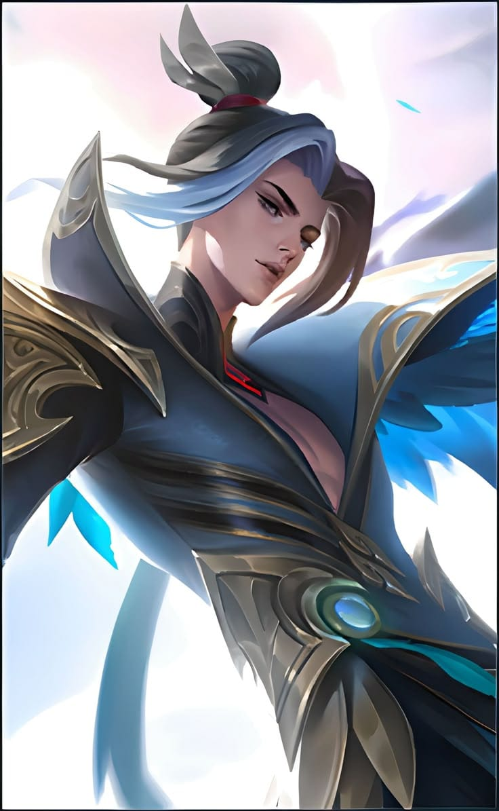

Eren Yeager adalah tokoh utama dalam anime dan manga Attack on Titan. Ia dikenal sebagai sosok yang penuh semangat, keras kepala, dan memiliki tekad kuat untuk menghancurkan para Titan setelah menyaksikan kematian ibunya di tangan mereka. Seiring berjalannya cerita, Eren mengalami perkembangan karakter yang kompleks, dari seorang remaja pemberani yang ingin kebebasan, hingga menjadi figur yang penuh ambisi dan membawa beban besar bagi masa depan umat manusia. Karakternya mencerminkan perjuangan, kebebasan, dan pengorbanan.
Ling adalah salah satu hero di Mobile Legends: Bang Bang yang dikenal sebagai assassin lincah dengan kemampuan melompat dari dinding ke dinding. Ia memiliki kecepatan tinggi, damage besar, dan sangat berbahaya saat menyerang lawan secara tiba-tiba, menjadikannya salah satu hero favorit untuk mencetak kill cepat.
Kunjungi website resmi kami: Ling CC Eren Yeager untuk mencari informasi.
Lihat Profil Diri Saya.